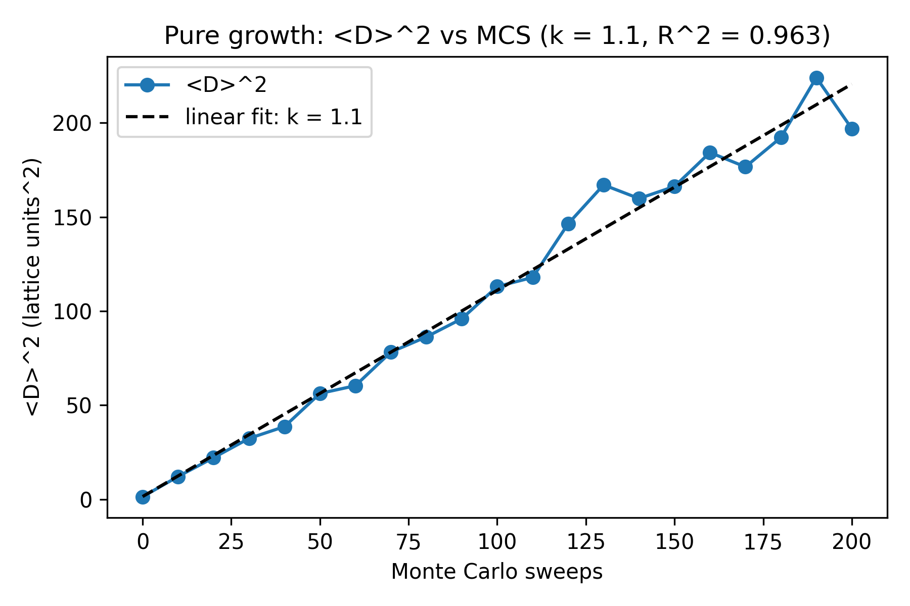
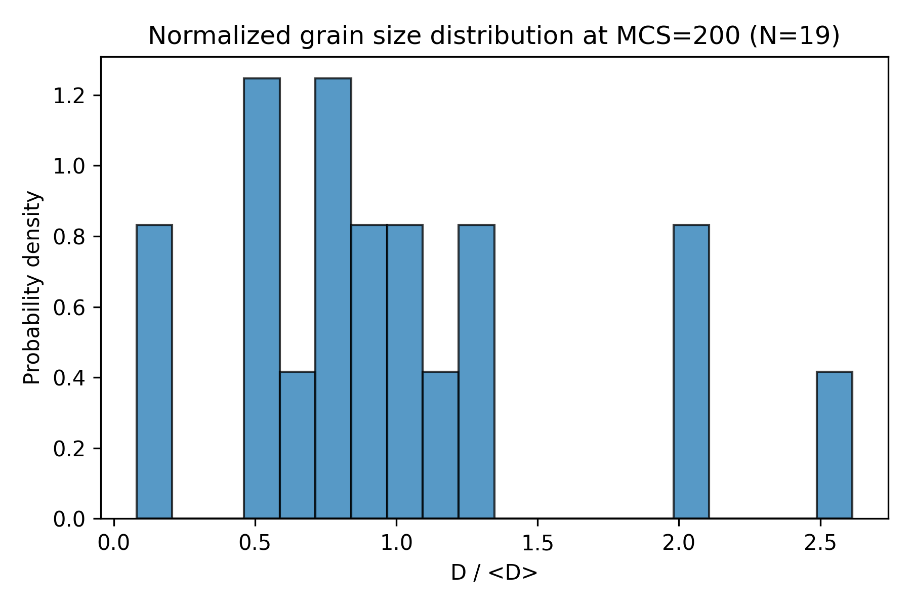
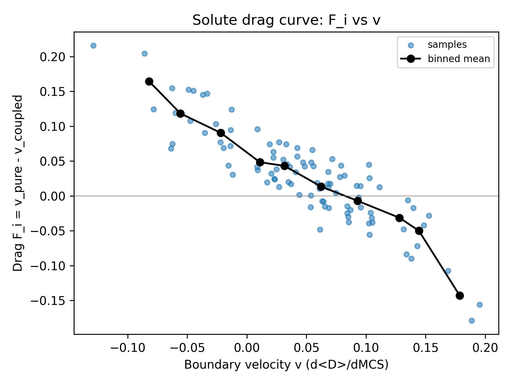
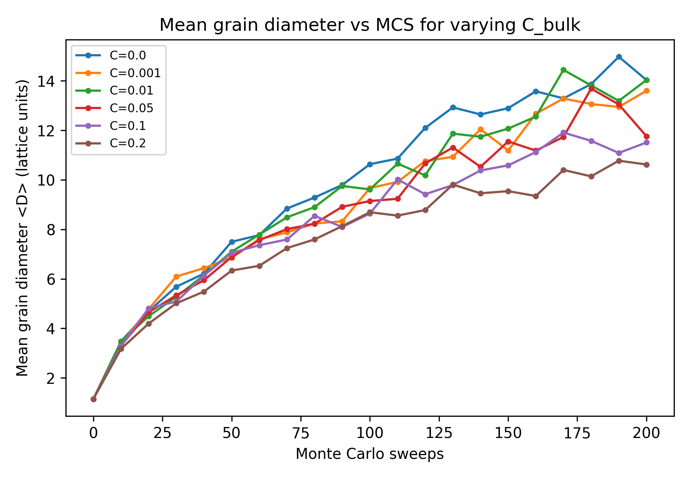
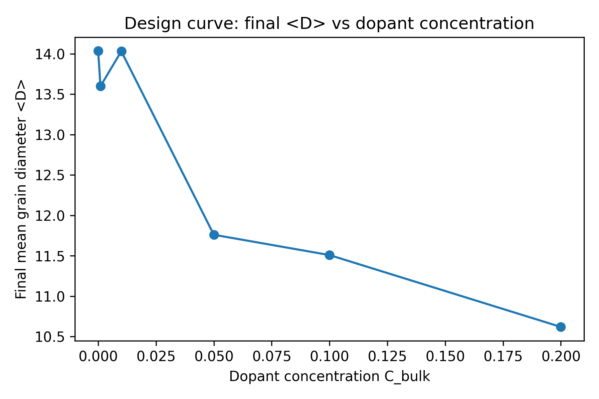
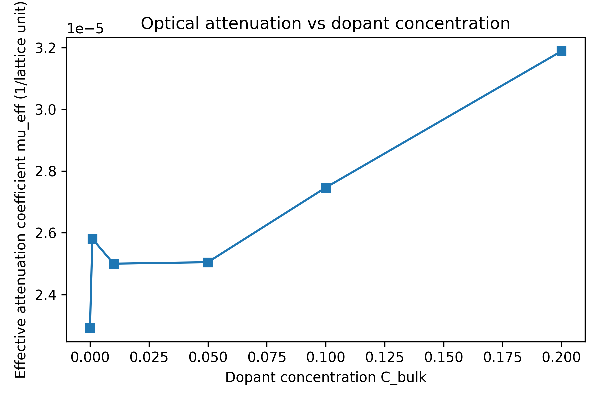
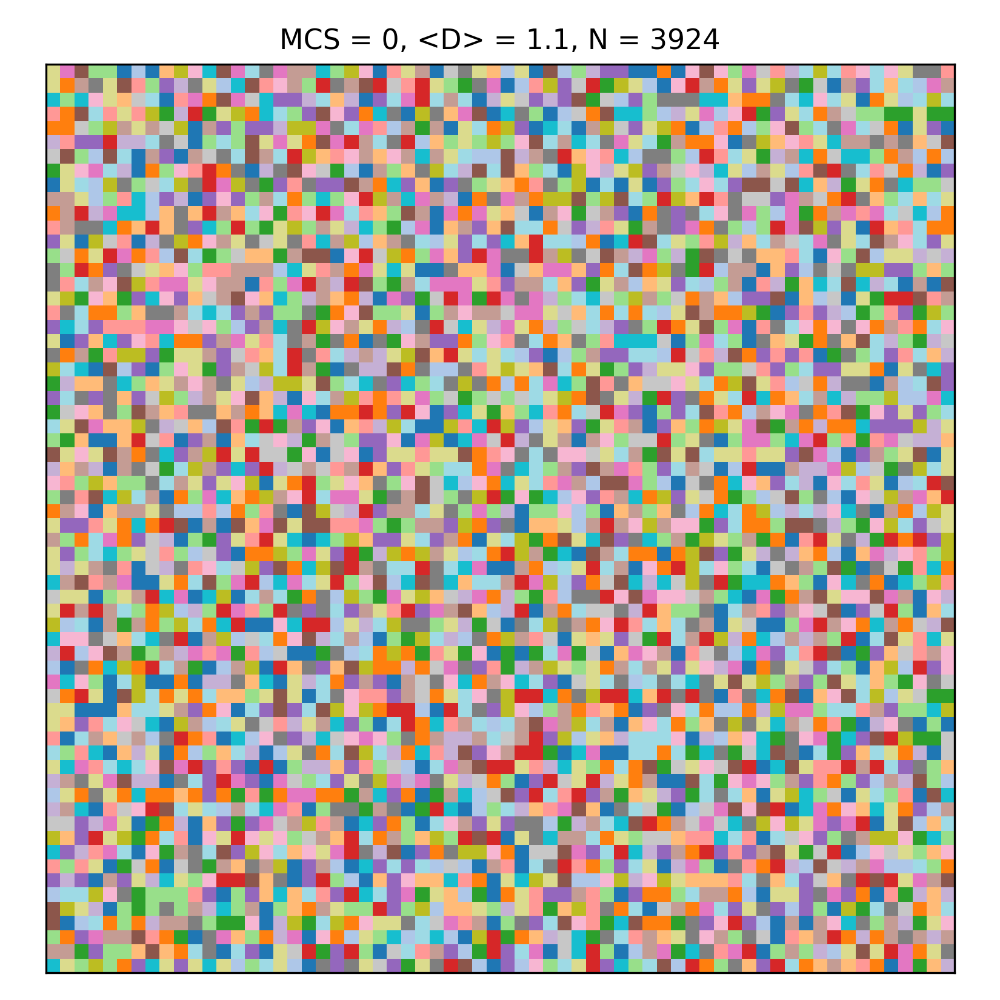

I simulated grain growth in a 2D Potts Monte Carlo with a segregating
dopant field. More dopant pins more boundaries, which shrinks grains
and roughly doubles the simulated optical scattering
across the dopant range studied — a clean illustration of the
activator-vs-transparency trade-off in scintillator ceramics.
Transparent ceramic scintillators (Lu₂O₃:Eu, YAG:Ce, GGAG:Ce) need a high
dopant loading and low optical scattering at once. Dopant atoms segregate
to grain boundaries during sintering and pin them via solute drag, leaving smaller
grains than a pure ceramic would have at the same conditions.
For grain sizes in the geometric scattering regime, more boundary area means more
scattering. So dopant loading buys light yield and opacity at the same time.
This project asks: how does final grain size scale with dopant
concentration, and what does that mean for the optical trade-off?
2D Q-state Potts lattice (L = 64, Q = 48). Site energy
\(E = J\sum_{N}[1-\delta_{s,s'}]\), \(J = 1\). Metropolis acceptance with
proposal drawn from neighbor orientations:
$$P_\text{accept} = \begin{cases} 1 & \Delta E \le 0 \\ e^{-\Delta E/k_B T} & \Delta E > 0\end{cases}$$
Continuous solute field \(C(i,j) \in [0,1]\) diffuses with an explicit FD Laplacian
(CFL guard) and segregates to boundary sites with the Boltzmann ratio
\(C_{GB}/C_{bulk} = e^{-E_{seg}/k_B T}\) (mass-conserving relaxation).
Drag couples solute to the MC step:
\(P^{coupled}_\text{accept} = P^{Potts}_\text{accept}\cdot(1-C(i,j))\).
The optical proxy is a Gaussian-blurred boundary map with
\(\mu_\text{eff} = (\delta n)^2 \cdot f_\text{boundary}\).

⟨D⟩² vs MCS — k ≈ 1.10, R² ≈ 0.96.

D / ⟨D⟩ histogram — unimodal, Hillert-like.

F vs v — binned mean shows the Cahn peak.
Mass conservation, equilibrium-segregation ratio, and limit
behaviour (C→0 recovers pure growth, C=1 freezes the lattice) all checked
in the 67 unit tests.

⟨D⟩(t) for C_bulk ∈ {0, …, 0.2}.

Final ⟨D⟩: 14.0 (C=0) → 10.6 (C=0.2).

μ_eff: 2.3e−5 → 3.2e−5 (~40%).
Log-log fit of μ_eff vs ⟨D⟩ gives slope
−0.78 (expected −1); μ_eff · ⟨D⟩ constant to ~15%.
Validates the geometric-regime scaling.

MCS = 0
step 1 of 4
One representative coupled run (C_bulk = 0.05, E_seg = −1.5).
~3924 grains at MCS = 0 coarsens to 31 grains by MCS = 200.
How each piece was built, in plain language. All Python, all in
the repo.
The lattice (potts.py). A 64×64
grid of integers between 1 and 48. Each integer is a grain
orientation. Two neighboring sites with different integers count
as a grain boundary. The edges of the grid wrap around (a torus),
so there are no walls.
One Monte Carlo step (mc_step.py).
Pick a site at random, pick a random neighbor's orientation, and
propose changing the site to it. Accept the change if it lowers
the energy; otherwise accept with probability
exp(−ΔE/kT). Repeat 64×64 times for
one "sweep."
The solute field (solute.py). A
second grid of floats holding the local dopant concentration.
Each step it diffuses (5-point Laplacian, periodic edges) and
relaxes toward equilibrium — preferring the boundary sites
by a Boltzmann factor — while keeping the total mass
constant.
The drag coupling (also mc_step.py).
Multiply the Metropolis acceptance probability by
(1 − C_local). High solute on a boundary site
means most flips get rejected, which is the drag.
Grain analysis (analysis.py).
Find connected same-orientation regions with
scipy.ndimage.label, then merge any clusters that
touch across the wraparound seams. Each cluster's size is
converted to an effective diameter
D = 2√(A/π).
Optical proxy (optical_proxy.py).
Mark every boundary site as a 1, blur with a 2.5-pixel Gaussian
(the "diffraction halo"), and report the boundary fraction
times (δn)². This is a stand-in for real
scattering — trends are meaningful, absolute numbers are
not.
Experiment runner (experiments.py,
main.py). One script that runs all 8
experiments at fixed seeds and writes every figure on this page
to results/figures/ in about 35 seconds.
Tests (tests/). 67 unit tests
covering each module: lattice invariants, mass conservation,
equilibrium ratios, Cahn-style drag shape, the parabolic growth
law, and the μ_eff ∝ 1/⟨D⟩ scaling.